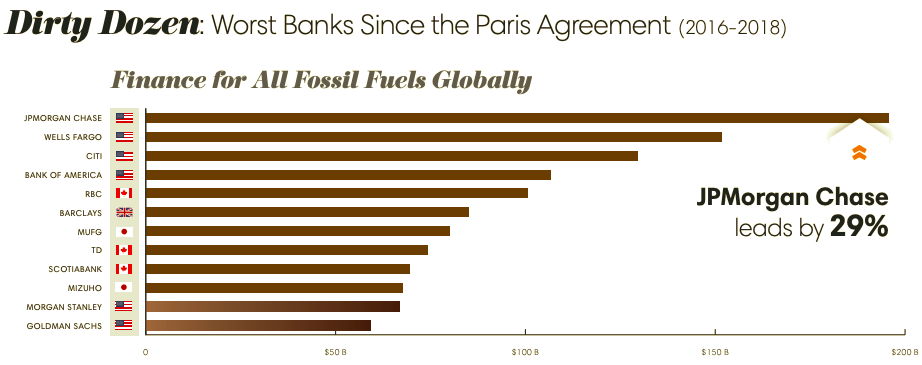

What's this all about?
I'll start with the basics of a budget might look like. Then go into why we should invest and what we can invest in... then move on to investing for retirement and non-retirement accounts. Finally I'll end with some general tips & some more advanced tips for long term investments.
I want to emphasize that I want you to be able to maximize your money, invest it/save it the way YOU want and have financial freedom (be able to save up for retirement, have extra money for fun trips, have an emergency fund in case the going gets rough).
1. Budgeting: Wait I Shouldn't Spend all my money every month???
You should try to save some money and invest some and put some in retirement if you can!
A rule of thumb popularized by Elizabeth Warren is the 50/30/20 rule. With regards to after tax money each month: 50% goes to fixed expenses (transportation, insurance, food, child care, rent/mortgage),30% is flexible (travel, gym, eating out, subscriptions, clothing, etc.), 20% goes to future expenses (emergency fund, retirement, investing, student loan debt).
I would recommend building up your emergency fund, retirement account and investing account at the same time because it's better to start early even if in small amounts. Of the 20% you allocate for future expenses you might put 12% for the emergency fund, 8% for retirement and 2% for general investing.
Your emergency fund is for emergencies! (aim to have enough money to pay for 3-6 months of your living costs). For your retirement account you can contribute up to 6k each year for a ROTH IRA or if you have a 401k try to contribute as much as your employer will match at the very least and up to 19.5k per year. Or if you want to go above and beyond you can have both. If you haven't heard of either retirement account there is more on both down below! Finally, the leftovers you should try to invest in long/short term investing accounts with things like stocks and funds and possibly cryptocurrency (more on this below).
Of course if you are able, it is in your best interest to minimize your fixed expenses and flexible espenses and maximize the percentage of money you allocate to future expenses. Now we'll go on to how we manage this future expense category!
2. Why Should I Invest?:
Financially the reasons are clear. Inflation in the US is ~2% so if you just leave your money sitting for 10 years it will be worth 18% less than it did when you earned it. The first goal with investing is honestly just to beat inflation. However, we can do better than that.
If you just invested in the US Stock Market, specifically the S & P 500 which are the 500 most profitable companes in the US, you will likely have an average of 8% growth (1957-2018 average yearly growth). If you invested in S & P your same 100 dollars, at the end of 10 years would be 174 dollars.
There are non-financial reasons as well, such as supporting clean energy, gender in the workplace and anything you can think of. In many ways the money you have is power, and you can allocate it to projects and companies and ideas that you believe. in.
3. What can I invest in:
First off are plain Stocks. These are shares of a company and by owning a share you own a piece of a company. Some companies give out dividends, but there are never management fees.
Then there are Blue-Chip Stocks. These are stocks from companies that are "reputable" and have withstood the test of time. Examples are IBM, Disney, & General Electric. This doesn't mean these stocks will never go down, but it does mean they should be less risky.
A more diversified investement is an ETF, which is usually actively managed; tracks several different underlying stocks or assets; and usually comes w/ both a management fee & a dividend.
Then there are Mutual Funds, which are like ETFs, but they are meant specifically for long term and may come with extra fees as well as require you to invest a certain amount every time you invest. Mutual funds are also only traded once a day while ETFs can be traded throughout the trading day. These will come with typically higher management fees and dividend yields.
Another low risk, generally for retirement account investment, is a REIT (Real Estate Investment Trust). A REIT is a company that has control over income producing real estate. Reasons to invest in REITs would be for their high dividends, long term appreciation, and to diversify your account, because they often don't correlate very much with the stock market.
There are many other options to invest in such as options, crypto, etc, but we won't dive into them.
4. Where to Invest?:
The money you put in your checkings account or the companies you get your credit card from, directly benefit from your money and purchases. Because of that I have decided to close both my Vanguard and Wells Fargo Account. You can take a look here to see some of the big banks that are invested in fossil fuel: Fossil Fuel Bank Report Card 2019
I support having a Schwab account, because they are more sustainable and evironmentally friendly than the other big banks and they have a nice debit card you can get. They are not the most sustainable bank, but they are also not the worst. You are able to have retirement, savings, checkings, and investing account altogether (They have a good trading platform you can use to simply buy and sell stocks and funds, but that also contains a lot of features), and even a debit card. Amalgamated Bank is also a good plave to keep money
If you want to invest directly in energy projects I would recommend taking a look at https://www.energea.com/investments. You get to own actual parts (equity) of renewable energy projects and receive a portion of the gains from the project!
For a quick start to investing I'd recommend a brokerage account with Robinhood. While Robinhood isn’t the best company and has partnerships with some of the big banks for some of its programs, Robinhood allowed me to get into investing easily(it has a great, basic phone interface and no fees for trading). I will likely though move some money out into either Schwab or somewhere else later on.
Additional info on Banking and Credit Cards: I planned to get a credit card with Amalgamated Bank,(AMAL is public and is a certified B Corps), but was unable although it is still a good place to save money due to the relatively high savings interest rate of .5%. If you want to look for other ethical banks etc. near you take a look at this site: https://howtodivest.org/ethicalbanks/. American Express and the Venmo credit card are great cards to have with rewards in the 1-3% range, but they are not the most sustainable/environmental companies. When looking at credit cards there are a few finanical criteria you may want to have in mind: zero foreign transaction fees, zero annual fee, cashback rewards, low APR (Annual Percentage Rate—how much you're charged for outstanding payments. You should try to pay down your credit card completely every month, though can set an autopay feature so you don't forget. It's also recommended to only use up to 30% of your credit card limit each month.) etc.
5. How to Check the ESG Ratings of Companies and Funds?:
ESG— (Environmental, Social, Governance) marked funds. Honestly researching companies and funds can be time consuming and frustrating. My favorite screening tool for ESG Funds is https://fossilfreefunds.org/ because they do a thorough job and include financial performance and multiple issue tabs within the platform. . Some other tools I've used to inform my investments are
Machine Learning Driven X-Y axis of ESG scores vs UN Global Compact scores
Scpecifically for screening Funds- Try the Advanced Search
Remember! ETFs have 4 letter tickers (names like CHGX) and mutual funds have 5 letter tickers (like BIAWX). And mutual funds generally have many restrictions and weird fee structures so be careful with mutual funds.
6. Saving for retirement:
The two main ones are a 401k and a Roth IRA. A 401k is only through an employer and is normally managed without much of your input. Definitely a great idea, especially if your company matches the contributions you make.
A Roth IRA is a personal retirement account, where you take your income after tax and put it in. A Roth IRA is better than a generic brokerage account because the money is not taxed in the account-it grows tax free and when you pull out your money at 59.5 years old you also don’t incur any taxing. However, you can only contribute 6k to a Roth IRA every year. I recommend personally managing your Roth IRA by investing in low cost funds/less risky investments you can drop your money in and forget about. The nice things is you can also always withdraw the amount of money you put in wihout penalty from a ROTH IRA if you are in a pinch (use this as a last resort though— this is for retirement!).
First create a Roth IRA w/ your broker (such as schwab) and add money, normally via a linked bank account.
Next is investing the money in your Roth IRA. The game plan for most retirement accounts is to buy things with less risk... One strategy for people early in their career, is to split your money 40-40-20: 40% Low Risk (ETFs, Mutual Funds), 40% Medium Risk (High Yield Funds, Blue-Chip/Established Stocks) & 20% High Risk (Penny/Individual Stocks, Very new/High risk funds, etc.)
I tend to go with ETFs (I have tended to avoid mutual funds becayse they often have weird restrictions and fees, but they can be solid long term investements). I like funds because they distribute risk and self manage without my input. Personally I try to invest in more socially and fossil fuel industry free conscious companies. So I tend to invest in what are called ESG (Environmental, Social, Governance) marked funds. As of November 2021 I am currently invested in...
| Ticker | Full Name | Type of Investment | Sector | Div Yield | Management Expense |
|---|---|---|---|---|---|
| EMXF | iShares ESG Advanced MSCI EM ETF | ETF | Emerging Markets | .93% | .16% |
| CHGX | Change Finance U.S Large Cap Fossil Fuel Free | ETF | US Large Companies | .49% | .49% |
| XLRE | Real Estate Select Sector SPDR | ETF | Real Estate | 2.92% | .12% |
| PHO | Invesco Water Resources | ETF | Water | .23% | .6% |
| TAN | Invesco Solar ETF | ETF | Solar | .55% | .69% |
| QCLN | iShares Global Clean Energy ETF | ETF | Global Clean Energy | .1% | .6% |
| HASI | Hannon Armstrong Sustnbl Infrstr Cap Inc | Stock | Infrastructure | 2% | 0% |
| PLD | Prologis Inc. REIT | Stock/REIT | Real Estate | 1.7% | 0% |
| NVDA | Nvidia | Stock | Technology | .12% | 0% |
I’ve invested in these mostly because they are ESG marked, they have decent dividends, and have low management expenses. However, many are relatively new and could be risky. You can do your own research and look up similar funds by searching for ESG funds. Keep an eye for past gains, div yield and management expenses.
For the stocks I choose I check their impact using the tools I mentioned above and look to see strong growth in the last 1-5 years.
Dividends are how much money is paid out to you per year. Dividends are paid usually quarterly or yearly and are a percentage of the value of your stock (you can choose to reinvest these dividends back into the underlying stock/fund if you want to-this is what I do).
Management Expenses are how much the company who provides this fund takes from your money per year. While low numbers like .1% may not sound like a lot, the numbers will add up over years and decades.
Remember it is key to keep adding and investing money as time goes on. If possible try to invest a minimum of 15% of your paycheck regularly. With this rule and a salary of 40K yearly, you'd contribute $500 a month w/ about 6% yearly gains from investing, which would net you 474K in 30 years when all you contributed was 180K. This is about a 163% increase in your money, more than doubled! And this could be more if you managed it better.
The other thing people may not know is that you can pull out the money you’ve contributed to a Roth IRA at any time without penalties (you just can’t take out the earnings on those contributions). Basically you can only take out what you put in. This is nice if you have an emergency and need to take money out.
7. General Investing:
Time to start thinking about general investing. Generally you should have enough cash to last you ~6 months and then the rest should be invested. You can continue with your broker. Create a regular brokerage investment account if you haven’t already. In this account you can buy funds like you did for retirement and/or you can be a little more speculative and risky if you want. It would be totally valid to treat this account essentially the same as the retirement account by just investing in funds and letting it ride.
I invest in stocks as well. Though the risk is higher by investing in single stocks, the reward is also higher. I recommend not venturing more than 5% on a single stock. In general don’t risk what you don’t want to lose. Also realize that having individual stocks may mean you’ll spend more time monitoring and selling/buying these positions.
My own long term money as of 2021 January is about 40% in safe plays like the funds mentioned above. 40% is in maybe 10 different companies (AAPL, AMAL, MU, GFL, AXP, HASI, INTU, PLD, PYPL, NVDA, TOELY, TSM). And the last 20% is 2% in options and 18% in cryptocurrency (specifically ADA, ALGO, BNB, ETH, EOS KCS, HYDRA, NANO, SHIB, XLM), but both options and crypto are definitely highly speculative and a whole other conversation and I would not necessarily recommend investing in them.
You can read more about some of the basic fundamentals for long term investments at the bottom
Although I am not in REITs or Mutual Funds much, I have some possible suggestions. For mutual funds: BIAWX, CGJAX, and NSRIX (Schwab has a pretty good mutual fund screener).For REITs: EQIX, STAG, CPT, PLD, DLR.
8. Investing Tips:
- Stocks go up and down, but ultimately if we take the US economy as an example, the economy will continue upwards! So many times it can be best to hold when things start dipping, because otherwise you might also miss when the economy starts going back up.
- You should always be looking at percentages! If you made 10 dollars that's cool, but what's cooler is if you're up 10% on your account or only 1%. Percentages tell a better story.
- When you buy/sell a stock or fund, set limit orders instead of market orders, which are basically an upper or lower limit on the price of the stock you are willing to sell or buy it at. This prevents you from buying or selling at a price that you don’t want. For example if you wanted to buy a stock that’s currently at $27 I’d maybe submit a limit order to buy the stock at max $27.02. You could even set that number lower if you expect the stock to drop a bit. Otherwise you might end up paying more like $27.10. This might seem insignificant, but if you're trading small stocks worth like $.80 then ten cents is more than 10%!
- Speculate with less than 10% of your account, especially in the beginning. At the very least speculate in different industries/companies
- Trends are more important than trying to find the low
- Get over being wrong fast, you will never be right all the time
- Be Consistent
- Don’t think you are smart because you got lucky, accept responsibility for your actions
9. Basic Fundamentals for Long-Term Investments:
- Dividend yield >3%, but excessively high (>7%) often carry other risks
- 10 year annual average return >10% but anything above 8% is decent, and make sure the fund/stock has been around for at least a decade
- price to equity (p/e) Relative to other funds/stocks in the sector, but the lower the better
- Price to Book: Same as P/E, you’re looking for a smaller number. Smaller tbe better, though it’s all relative to counterparts
- Dividend Growth: You just want to see that the dividend is growing consistently, higher the percent growth the better, but anything positive is good
- Performance compared to benchmark and SPY: You want something that outperforms (AFTER operating expenses) SPY and other benchmarks in the industry, else you might as well own those instead
- Debt to Equity: The lower the better, though some business models by default Carry higher debt, so this isn’t as important
- Payout Ratio: How much of the companies profits go to its investors. The higher the number, the more the institutions give investors, but also the LESS they are reinvesting into the company, which can lead to minimal appreciation and growth. So keep that in mind... try to pick something in the middle, 20-30% range, but higher or lower is fine. Again depends on all the other factors and the industry and business model
- Morning Star Rating or other ratings: Ratings are entirely unnecessary, but to have all your criteria met AND see that your pick has a decent (4-5 star) rating, just adds to conviction